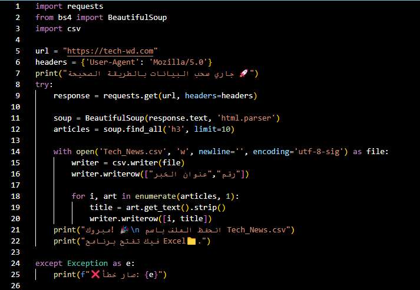
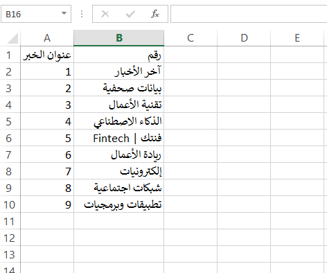

Advanced Automation
Python Scripting • Web Scraping • Workflow Optimization
Verified Certification

Issued by Harvard University
Project Logic: Web News Scraper

RESULT GENERATED ✅

This Python script utilizes BeautifulSoup and Requests to crawl tech news platforms. It extracts the latest headlines, sanitizes the data, and exports it into a structured CSV format compatible with Excel.